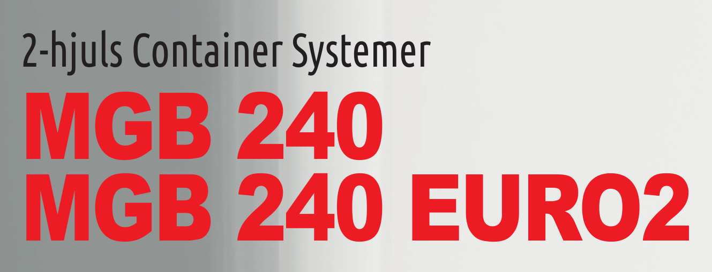
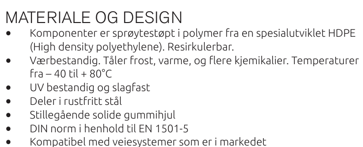
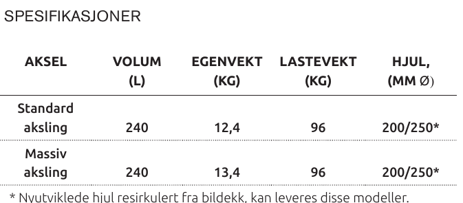
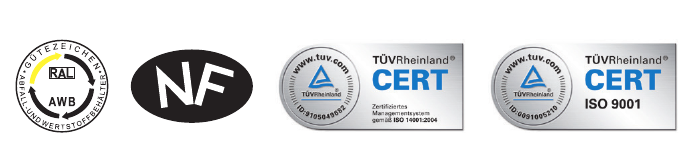

DR-001
Document review · 6 October 2026
Product datasheet Citybac 240 L,
read as a tender attachment.
The current published datasheet for the Citybac 240 L was read against the requirement specification in Bilag 2, requirement by requirement. Nothing here is a score. The buyer scores.
Method
Bilag 2 sets sixty numbered requirements. Twenty-six ask for a delivery plan, an option price or a complaints procedure, which no product datasheet answers. Thirty-four remain.
Answered means the document states the thing the buyer asks for. Partial means close but off the point. Absent means there is nothing to point at.
The count
Nine of
thirty-four
can be
answered.
Krav 1, 2, 7, 11, 13, 14, 15, 17, 18. Make, product sheet, dimensions, weights, every size, wheels, brakes.
Krav 3, 4, 22, 27, 41, 46, 57. Named, but not to the part, the colour or the committed figure the buyer asks for.
Krav 5, 6, 8, 9, 10, 12, 16, 19–21, 23–26, 28, 47, 58, 60. Two of these were in the 2020 sheet.
Scored as one document. All six sizes the framework buys — 80, 140, 240, 360, 660 and 1000 litres — have a current datasheet on the same eight-page pattern, so what is absent here is absent across the family.
Findings / Sheet 2
DR-001
Four things an evaluator meets first.

Finding 01 / Krav 2, A
Two sheets, one product.
«Det vedlegges produktblad / brosyrer over beholderne.»
The 2020 sheet is still served from the site beside the 2025 one. A bidder can attach either.

Finding 02 / Krav 5 and 6
Two standards left the document.
«…i tråd med kravene i NS-EN 1501-5.» «…sertifisert etter RAL-GZ 951/1.»
Both are named in the 2020 sheet. Neither appears in any of the six current ones.

Finding 03 / Krav 57, A · climate 30 of 100
Up to is not a minimum.
«Forpliktende minimumsandel PCR (vekt-%) oppgis separat…»
The sheet says up to 100 per cent. The buyer asks a floor, per part, third-party certified.

Finding 04 / Krav 3 and 4, both A
EN 840 is a row in a weight table.
«Beholderne skal tilfredsstille NS EN 840 del 1-6… vedlegge dokumentasjon.»
No part of the standard, no certificate number, no issuing body, no date.
The wheel requirement is met in the current sheet, not the 2020 one. Two standards went the other way.